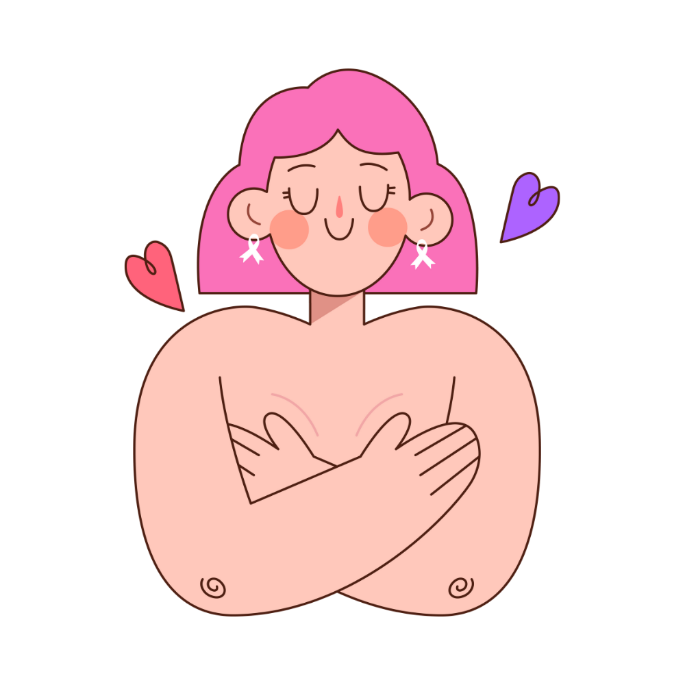
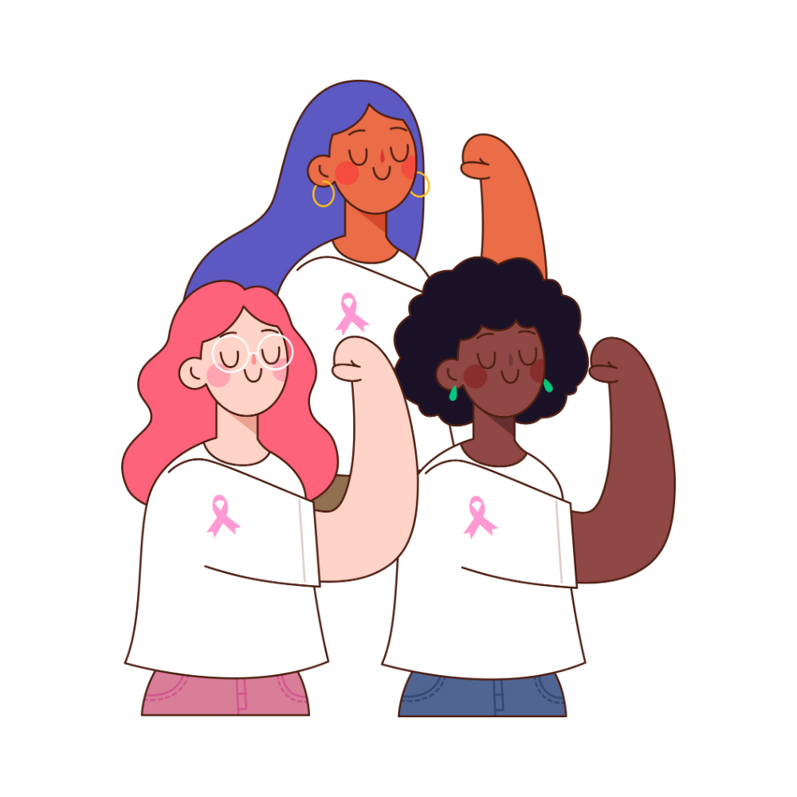

Projeto de extensão · UNIFESP
Câncer de mama
Informações essenciais para prevenção e cuidado
O que é?
Doença causada pelo crescimento de células anormais na mama, que formam um tumor. É o câncer mais comum em mulheres no Brasil (após o de pele). Homens também podem desenvolver — cerca de 1% dos casos.
Quando diagnosticado cedo, a maioria dos casos tem boa resposta ao tratamento.
Fique atenta aos sinais
- Caroço endurecido na mama (principal sinal)
- Alteração na pele ou no mamilo
- Saída espontânea de líquido do mamilo
- Inchaço ou nódulo na axila
Qualquer alteração persistente deve ser avaliada por um profissional de saúde.
Em caso de suspeita
Em qualquer suspeita, busque o serviço de saúde mais próximo.
UBS Vila Mariana
Unidade Básica de Saúde · atendimento público (SUS)
- Endereço
- Rua Dr. Diogo de Faria, 678 — Vila Clementino, São Paulo
- Funcionamento
- Segunda a sexta, das 7h às 19h
- Telefone
- (11) 5239-4853
Atendimento básico, vacinação, clínico geral, enfermagem, acompanhamento de saúde da família e encaminhamentos.
Prevenção e autocuidado
- Conheça seu corpo — observe e sinta suas mamas regularmente
- Pratique atividade física e mantenha peso saudável
- Evite o consumo excessivo de álcool
- Mulheres de 50 a 69 anos: mamografia a cada 2 anos (SUS)

Nosso objetivo
Este material foi elaborado pela turma T60 de Biomedicina da UNIFESP como projeto de extensão, com base na cartilha do INCA “Câncer de mama: vamos falar sobre isso?”, para divulgar informação clara e acessível à comunidade.
Informe-se. Converse. Compartilhe.